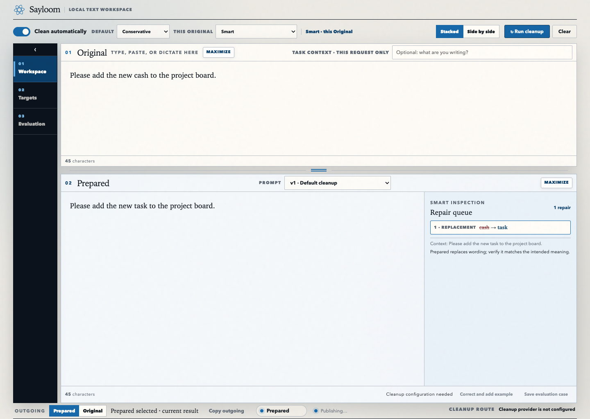

Start with Voiceitt-generated text
Please add the new cash to the project board.
The received wording remains editable and never disappears behind an automatic result.
Partner overview
Sayloom
From imperfect recognition to usable text
Sayloom receives text generated by Voiceitt and makes a separate Prepared version for review. The Original always stays available.
Important: Sayloom receives text, not audio. The person who produced the text remains the authority on what they meant.
Please add the new cash to the project board.
The received wording remains editable and never disappears behind an automatic result.
Please add the new task to the project board.
Smart can repair likely word-recognition errors using one correction method today.
The person can copy or send Prepared—or choose Original instead. If correction fails, Sayloom fails open to Original.
Available today
Original and Prepared sit together so changes can be inspected. Outgoing names the exact version selected for copying or delivery. The screenshot uses synthetic text in an isolated test setup that does not contact an AI provider.

The boundary
The automatic-correction work is a prototype plan. It must earn its way into the product through private evidence; having tools to compare approaches is not proof that any approach works.
Available today
Planned prototype
Planned prototype
The prototype will test Smart as a whole. One promising correction method is not enough if Smart chooses it for the wrong text.
Compare
Test different ways of correcting text—and useful combinations—on the same qualifying examples.
Choose
Compare always using one method, trying methods in a set order, and choosing based on each piece of text.
Protect
If correction fails, takes too long, cannot help, or looks unsafe, usable Original text must remain available.
Prove
No approach reaches the product unless private examples set aside in advance meet success rules agreed before final results.
Current evidence status
The latest approved review found no cases that met the agreed requirements. That is a stop signal, not a result to explain away.
This branch is building a private evidence-collection path so actual Voiceitt-generated text can be paired with producer-confirmed Intended wording before candidate output is seen.
What a partner can take away
A later, separately authorized shareable pilot may let a small group try a qualified prototype. It would not be production hosting, deployment approval, or broad evidence that Sayloom works for everyone.
Sayloom is an independent, unaffiliated companion to Voiceitt. Voiceitt is a trademark of its respective owner. The example text is synthetic. This overview describes current implementation and planned prototype work; it is not proof that Sayloom works broadly.